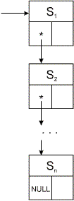

Правила преобразования графов в структурах данных.
Правила преобразования графов в структуре данных аналогичны правилам В1-В7.
Правила преобразования графов в структурах данных:
С1. Свести систему графов к как можно меньшему числу отдельных графов с помощью соответствующих подстановок.
С2. Преобразовать каждый граф в структуру данных согласно правилам С3-С5, приведенным ниже.
С3. Последовательность элементов (см. рис. к правилу В3) преобразуется в следующий список узлов:
С4. Список альтернатив (см. рис. к правилу В4) преобразуется в следующую структуру данных:

С5. Цикл (см. рис. к правилу В5) преобразуется в следующую структуру:
В качестве примера рассмотрим построение структуры данных для сводного синтаксического графа, приведенного на рис.9.2.
Структура данных идентифицируется узлом-заголовком, который содержит имя нетерминального символа (цели), к которому относится структура. Вообще говоря, заголовок не является необходимым, так как можно вместо поля цели указывать непосредственно на "вход" в соответствующую структуру. Однако заголовок можно использовать для хранения выводимого на печать имени структуры:
struct header;
typedef header *hpointer;
struct header {
pointer entry;
char sym;
};
Программа, производящая грамматический разбор предложения, представленного в виде последовательности символов входного файла, состоит из повторяющегося оператора, описывающего переход от одного узла к следующему узлу.
В поле sym для терминального символа помещается сам символ, для нетерминального – ссылка на соответствующую структуру данных. Она оформлена как процедура, задающая интерпретацию графа; если встречается узел, представляющий нетерминальный символ, то интерпретация графа, на который ссылается данный узел, предшествует завершению интерпретации текущего графа. Следовательно, процедура интерпретации вызывается рекурсивно. Если текущий символ (sym) входного файла совпадает с символом в текущем узле структуры данных, то процедура переходит к узлу, на который указывает поле suc, иначе – к узлу, на который указывает поле alt. Полученная структура данных приведена на рис.11.1.
void parse(hpointer goal, int &match)
{
pointer s;
s = goal->entry;
do
{
if(s->isTerminal)
{
if(s->tsym == sym)
{
match = 1;
sym = fgetc(input);
}
else
match = (s->tsym == empty)? 1 : 0;
}
else
parse(s->nsym, match);
if(match)
s = s->suc;
else
s = s->alt;
} while(s != NULL);
}
Программа грамматического разбора, приведенная выше, "стремится" к новой подцели G, как только она появляется, не проверяя даже, содержится ли текущий символ входного файла во множестве начальных символов соответствующего графа first(G). Это предполагает, что в синтаксическом графе не должно существовать выбора между несколькими альтернативными нетерминальными элементами. В частности, если какой-либо нетерминальный символ может порождать пустую последовательность, то ни одна из правых частей соответствующих ему порождающих правил не должна начинаться с нетерминального символа.
При такой организации грамматического разбора программа обычно считывает представленную в определенном формате грамматику языка, заполняя при этом соответствующие структуры данных, и только после этого читает текст на разбираемом языке и выполняет его синтаксический анализ.
На основе этой программы грамматического разбора можно построить более сложные таблично-управляемые программы грамматического разбора, которые могут работать с более широкими классами грамматик. Небольшая модификация позволяет также осуществлять и возвраты, но это будет сопровождаться значительной потерей эффективности.